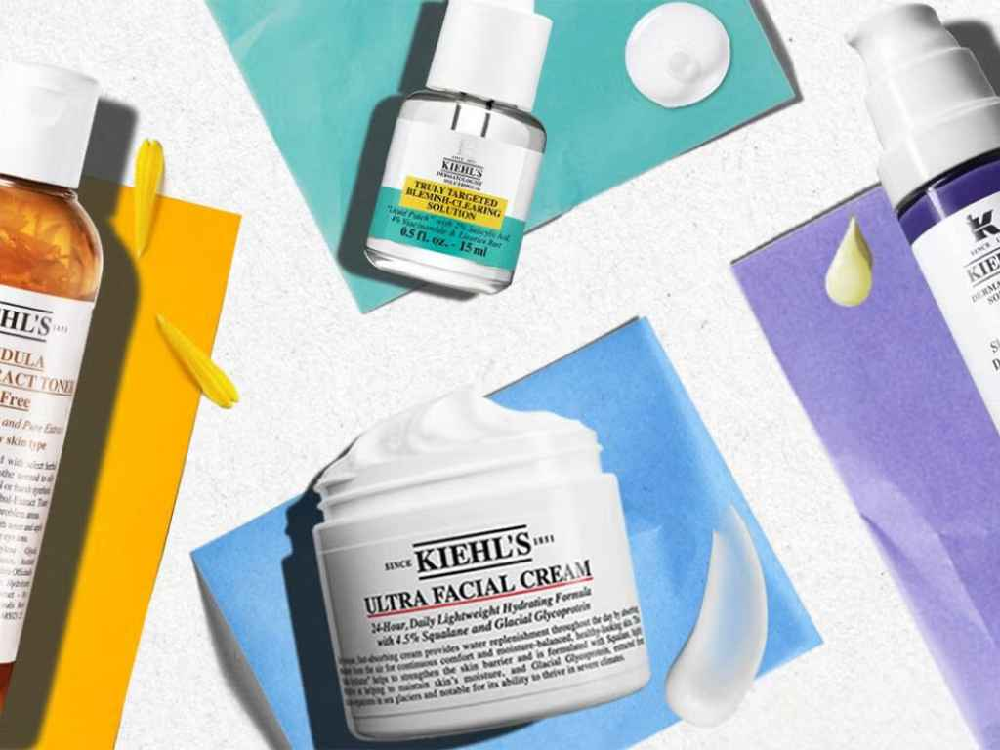

Premium Audience
Podcasts reach engaged, premium listeners who actively choose their content. This ensures high attention and strong brand recall.

Authentic partnerships, trusted storytelling, real impact.
Your shortcut to audiences who lean in, not tune out.


Podcasts reach engaged, premium listeners who actively choose their content. This ensures high attention and strong brand recall.
Podcasts give room to explain. Hosts translate features into clear, human stories that help listeners truly understand — and remember — your product.

Hosts create authentic bonds with their listeners. This trust makes product recommendations more credible and campaigns more effective.


With Bumble, dating happens your way — that was the focus of this campaign. Our hosts shared their own dating experiences, brought in voices from the community, and showed how women can take control of their dating decisions. Bumble was positioned as a safe, modern platform for true empowerment.
How does food stay fresh longer? Our hosts showed how ZWILLING’s FRESH & SAVE system makes everyday life easier — from meal prepping to family dinners. The products extend freshness by up to five times, saving time, money and reducing waste. A campaign that convinced with real use cases.

AG1 is more than just a green shake — and we told that story across different podcast formats. Our hosts explained what’s inside AG1 and how the daily mix helps build a solid nutrient foundation. Whether sport, stress or everyday life: AG1 adapts to your needs — simple, efficient, sustainable.

In April, everything revolved around sustainable linen apparel. Our hosts presented their favourite Armed Angels pieces, embedded in personal podcast stories. It wasn’t just about style - it was also about fair production. That’s how Armed Angels became part of the conversation: authentic, honest, and straight from life.
Every campaign is guided step by step — from show choice to final host-read.
“We compared several providers and ultimately chose Juicy Crew because the suggested podcasts and hosts were the best fit for our brand and products.”

“The collaboration was shaped from the start by strong audience consulting – exactly what mattered most to us. The integrations were perfectly aligned with our values, and the execution was absolutely professional and collaborative. A truly successful partnership.”

“With Juicy Crew, we placed our Linen & Pants collection in 12 podcasts and achieved 500,000 impressions with great podcasts. The results were a complete success!”